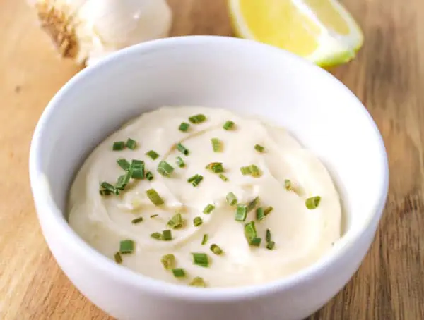

Garlic Mayo Dip
One very, very simple recipe for a delicious sauce. Combines a lot with fried potato, grilled seafood and others.
It's also known as aioli, it's origin is from Mediterranean, and it's very popular in Catalonia (North Spain) and Provence (South France).
Ingredients
- 6 tablesponn of mayonnaise
- 2 garlic clove, pressed
- Parsley
- 1 teaspoon extra-virgin olive oil
- Salt
Directions
- Whisk mayonnaise, garlic, parsley and the oil in small bowl to blend. Season with salt.
- Serve (or cover and chill).